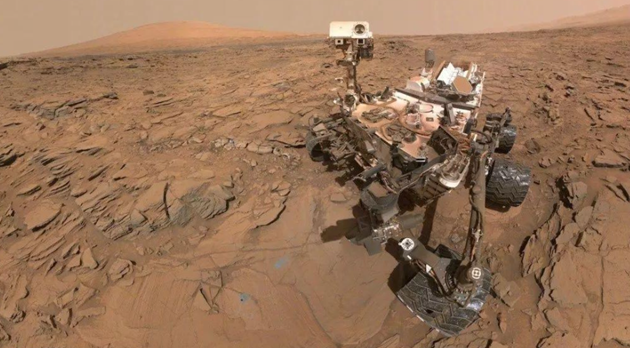
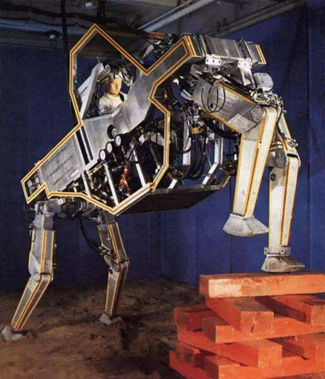
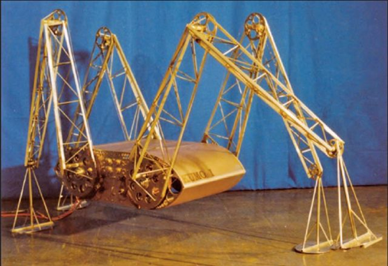
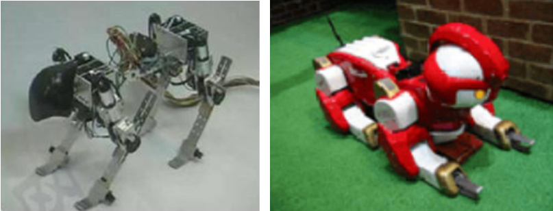
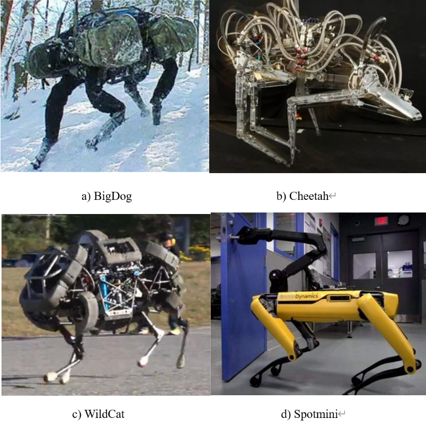
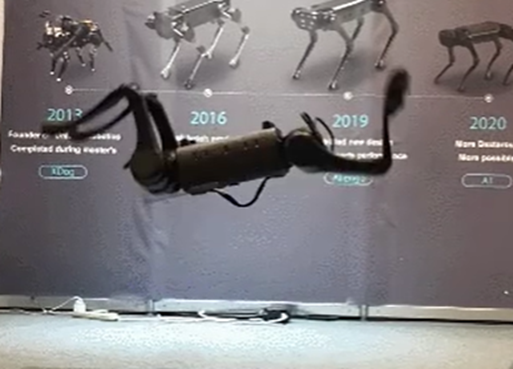
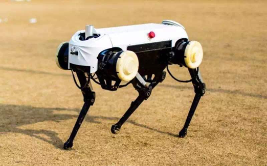
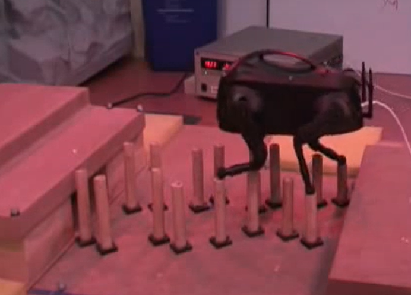

背景介绍
1.1 课题背景及研究的目的和意义
近几年，足式机器人的发展受到了世界各国的广泛关注。这是因为，相比于传统的轮式和履带式机器人，足式机器人不需要连续的运动路径。足式机器人的运动轨迹为离散的落足点，能够利用非结构化或崎岖地形中的可支撑地形区域行走，因此对复杂地形的适应能力更强。如图1-1所示，行星崎岖的地表上布满碎石，足式机器人在行星探索上相比于传统轮式机器人具有更大的应用价值和应用前景。 
足式机器人在空间活动中也至关重要，例如在轨维修，大型空间站的在轨装配。空间站舱内外的空间机器人的工作环境是非结构化的非平坦的表面，所以足式机器人可以利用其离散的运动轨迹很好地在空间站舱内外移动。相比于单个机械臂的尺蠖式的移动，多足机器人的移动更加稳定，并且可以在操作的同时调整自身的位置和姿态。
常见的足式机器人有双足机器人、四足机器人和六足机器人。四足机器人拥有比双足机器人更好的稳定性，同时具有比六足机器人更灵活的运动性能。因此四足机器人具有好的发展潜力，成为了足式机器人研究中的热点。
四足机器人步态规划与控制技术一直是研究的重点，现有的研究中更多地关注了四足机器人的周期性步态，如trot步态和crawl步态等，这些步态的运动周期和摆动腿的顺序固定，这些步态较少地考虑环境因素，一般应用于平坦或地势起伏比较小的地面，不适用于非结构化的崎岖地形。非结构化的崎岖地形，通过一些条件约束，可以等效为一系列离散的落足点的集合。周期性步态无法保证实际的落足点落入该集合内，即无法满足行走于复杂地形。所以人们提出了一种考虑外界环境因素，非周期性的步态——自由步态。
自由步态是迈步顺序不固定，步长和迈步方向也不固定的一种非周期步态，自由步态规划中的机器人能够自主根据地形因素、运动学约束和稳定性判据计算出摆动腿及其落足点的位置，可以行走于复杂的非结构环境。因此，为了提高四足机器人的地形适应性。有必要对自由步态规划进行深入研究分析。
1.2 国内外在该方向的研究现状及分析
1.2.1 四足机器人研究现状
最早期的四足机器人主要由机械和液压控制，并且需要人工操作。最为典型的是 1968 年美国通用电气公司设计的四足步行机Crawling Truck，见图1-2。 东京工业大学于1976 年研发了四足机器人KUMO-I，见图1-3。KUMO-I是第一台具有自主行走的四足机器人，虽然KUMO-I的四条腿分别有一个电机驱动，但是它拥有一定越障能力，能够在起伏较小的地面上全向移动。 

随着计算机技术和电机技术的快速发展，四足机器人拥有了更加灵巧的驱动关节和算力更强的控制器，可以通过复杂控制算法自主实现多种运动步态。
日本电气通讯大学参考了动物运动中神经中枢的反射行为，制了Tekken系列四足机器人，见图1-4。该系列四足机器人采用了基于神经震荡器的中枢模式发生器（Central Pattern Generator）来控制腿的运动。CPG不需要传感器反馈，只根据输入的传感器信号产生节律性运动信号，从而生成对地形自适应的行走步态。 
近年来随着传感器技术和计算机技术的进一步发展，四足机器人搭载了深度摄像头、激光雷达等传感器，拥有了感知周围环境的能力，可以充分利用环境信息进行自主规划，提升地形适应能力。
自 2005 年以来，美国波士顿动力公司推出了 Big Dog、Cheetah、WildCat 、Spot多款四足机器人，见图1-5。
其中Big Dog是世界上第一款真正实现了野外行走的机器人，其通过激光雷达和视觉感知周围环境，将环境转化为可被规划的地图，在此基础上进行路径规划，实现了在复杂坡地上的自主运动。Cheetah猎豹仿生四足机器人在跑步机上可以达到45km/h的速度。仿猫四足机器人WildCat可以高速奔跑情况下灵活转弯。Spotmini四足仿生机器人体型小巧，质量仅约30kg，还可以搭载机械臂，完成自主作业。 
国内的四足机器人研究起步较晚，但是仍有一些比较突出的成果。杭州宇树科技研发的四足机器人A1，具有较高的功率质量密度比，能够在草地、坡面、松软小石块路面进行自适应行走，还可以实现后空翻，见图1-6。浙江大学研制的四足机器人“绝影”载重可达到 20kg，走速度为每小时 6km。见图1-7。“绝影”在外力的干扰下可以用小碎步调整姿态。 

目前国内四足机器人团队和公司更多关注于四足机器人的关节驱动、负载能力和运动性能上，对于四足机器人的环境感知，自主步态规划研究较少。
1.2.2自由步态研究现状
自由步态是一种根据地形信息和自身状态进行实时调整的智能化步态。自由步态分为两大类，分别为基于规则的和基于搜索的。
早期的自由步态规划大多是基于规则的，这种规划根据四足机器人当前重心、四条腿的足端位置、地形条件等信息，通过一组规则，规划下一步机器人的移动。
例如Hirose将地形分为可行区域和禁行区域，设计了基于周期性静步态的自由步态。Kumar和Waldron提出了一种改进的波形步态，提升了四足机器人的自主适应能力。该步态下，四足机器人可以根据当前的落足点自主调整之后的步态。但是这些基于规则的方法并未能考虑到全局地形信息，所以机器人在多步运动之后无法找到满足规则的下一步运动，，即陷入了“卡死”状态。
此后，Pal和Jayarajan K. 为了规避机器人出现“卡死”状态，提出了基于图搜索过程的局部最优自由步态规划，但约束过于简化，难以运用于实际场景。Pack D J和Kang H提出了一种基于搜索算法的全局步态规划，但是由于全局的规划空间过大，图搜索算法计算量太大，不适合于实时规划。
随着传感器技术的发展和计算机算力的提升，自由步态规划发生了巨大的变化。Kolter 等 LittleDog 的相关研究人员在他们发表的论文中较详细地介绍了一个完整的四足机器人的控制系统的框架结构，这个结构包括了高层规划器、低层规划器和低层执行控制器总共三层控制结构。高层规划器负责从三维地形栅格地图信息中，提取出能够供机器人落足的点集，采用专家示教方法为每个落足点打分。低层规划器在移动路径附近搜索代价最小或评价值最高的最佳落足点集。低层执行器完成最基础的运动控制。如图1-8，这种自由步态规划让LittleDog拥有强大的地形适应能力，可以通过复杂崎岖的地形。 